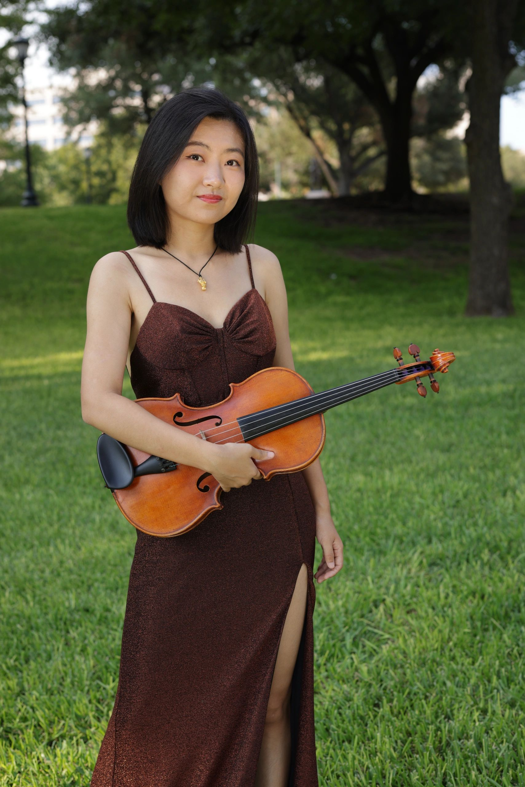

About me

Dr. Jingyi Song
Dr. Song is a renowned violist and educator (Violin, Viola, and Music Theory). Originally from China, she earned her D.M.A. (Doctor of Musical Arts) degree in Viola Performance from the University of Texas at Austin under the tutelage of Professor Roger Myers. Dr. Song is a member of the ASTACAP committee and a Suzuki-certified teacher.
With a deep-rooted passion for music, Dr. Song began violin studies at age four and transitioned to viola at twelve. Her extensive performance experience includes collaborations with esteemed orchestras such as the Central Texas Symphony Orchestra, Mid-Texas Symphony Orchestra, Tianjin Symphony Orchestra, and Orchestra Filarmonica di Catania. As an undergraduate, she performed with The Juilliard School Joint Concert and was selected as a Young Artist Fellow at the Round Top Music Festival. Her musical journey has been enriched through participation in prestigious festivals including the Green Mountain Chamber Music Festival, Summer Strings Academy for Girls, and the International Music Academy of Frostburg State University.
Dr. Song's commitment to teaching is evident in her role as faculty for the String Project at the University of Texas at Austin. Her students have consistently excelled, with many securing positions in the All-Region Orchestra. As an active member of the music community, she has volunteered at multiple ASTA National Conferences, served as a judge for the MAP-IMC Competition and ASTACAP Competition, and contributed to the Perpetual String Camp.
Dr. Song's exceptional talent has been recognized through numerous awards and honors. She is the recipient of the Absolute First Prize at the Fanny Mendelssohn International Competition and the Absolute First Prize Chamber Group and Professional Group at the Vivaldi International Music Competition. Additionally, she has garnered top honors at the MAP-IMC Competition, the American Classical Young Musician Award, and the Hong Kong International String Open Competition.
Her dedication to her craft is further evidenced by her studies under world-renowned musicians including Roberto Diaz, Susan Dubois, Michelle LaCourse, and members of the Miró and Juilliard String Quartets. Dr. Song holds a Master's degree from the University of Texas at Austin and a Bachelor's degree from the Tianjin Conservatory of Music. She is an active member of ASTA, TMEA, AVS, and the Suzuki Association of the Americas.
When not immersed in music, Dr. Song enjoys spending time with family and friends, exploring new places, and volunteering.
中文简介
Dr. 宋静宜
宋博士出生于中国山西省太原市，在2024年在美国德克萨斯大学奥斯汀分校巴特勒音乐学院（University of Texas at Austin, Butler School of Music)取得音乐艺术博士学位（DMA），师从Prof. Roger Myers。她在2023年6月被选为ASTACAP委员会成员。曾在UT-Austin String Project 担任小提琴，中提琴，集体课以及乐理课教师。她完成了铃木教学法（Suzuki Training）小提琴与中提琴1-3册。她教过的学生从4岁到57岁不等，有中国大陆，香港，澳大利亚，美国，西班牙等地的学生，擅长中英文教学。其中中提琴学生选入All-Region Orchestra in Austin, Texas，考入市重点，省重点初中，高中，大学，以及各种交响乐团。
宋博士从4岁开始跟随山西省戏剧学院陈文老师学习小提琴，在12岁时因为听现场弦乐四重奏演奏德沃夏克的“美国”而对中提琴感兴趣随后该学中提琴。在初中升高中时，她获得太原市第三名的好成绩进入重点高中。因为对中提琴的热爱以及对海边城市的向往，以第三名的成绩考入天津音乐学院跟随许燕明教授学习中提琴表演。在本科就读阶段，一直保持第一名的好成绩。在许教授的介绍下2016年前往美国佛罗斯堡大学参加夏令营，随后产生对美国中提琴学习的向往。研究生考入德克萨斯大学奥斯汀分校跟随Prof. Roger Myers 学习中提琴演奏，Miro Quartet的老师们学习重奏，Dr. Laurie Scott 学习弦乐教学法，与Dr. Dell' Antonio进行音乐历史研究。在此之后的博士申请中收到德克萨斯大学奥斯汀分校高奖，明尼苏达大学高奖，佐治亚大学全奖以及助教，堪萨斯大学全奖以及助教，路易斯安那州立大学全奖以及助教，爱荷华大学博士offer。最终选择继续在德克萨斯大学奥斯汀分校读中提琴表演博士。
在20多年的学习与演奏过程中，宋博士的演出足迹遍布中国以及美国，她曾与德克萨斯中部交响乐团，天津交响乐团，Orchestra Filarmonica Di Catania’s Opera, 山东歌舞剧院以及国内许多交响乐团合作演出。本科期间参与天津音乐学院与朱莉亚音乐学院的合作演出，担任许多大师课英语翻译工作，研究生与博士期间担任学校乐团中提琴首席，歌剧团中提琴首席。 在课余时间，她曾入选Round Top Music Festival并伴随全免奖学金，Green Mountain Music Festival, Summer Strings Academy for Girls。在2022年，她参与了ASTA Conference。2023年2月她被TMEA邀请作为表演者进行演出。2023与2024年3月她被ASTA Conference 选中为志愿者。2023年5月被MAP-IMC Competition邀请作为青少年组评委，同年在6月被选为ASTACAP委员会成员。2024年6月被ASTACAP邀请作为评审嘉宾。
宋博士在学习期间参加了国际国内外许多比赛并且获得了优异的成绩。2024年3月，芬妮门德尔松国际比赛第一名。2023年11月维瓦尔第国际音乐比赛中提琴组与重奏组第一名。2023年5月，MAP-IMC国际比赛中提琴组第二名（第一名空缺）. 同时她在校期间获得许多奖学金，例如2022-2024，Lucille Roan-Gray Endowed Presidential Scholarship. 2018-2024，Dr. and Mrs. Ernest C. Butler Scholarship Excellence Scholarship.
在她的闲暇时间里，她喜欢做饭，和家人朋友们分享她的生活，以及与她的先生陈彦璋去各地旅游爬山。